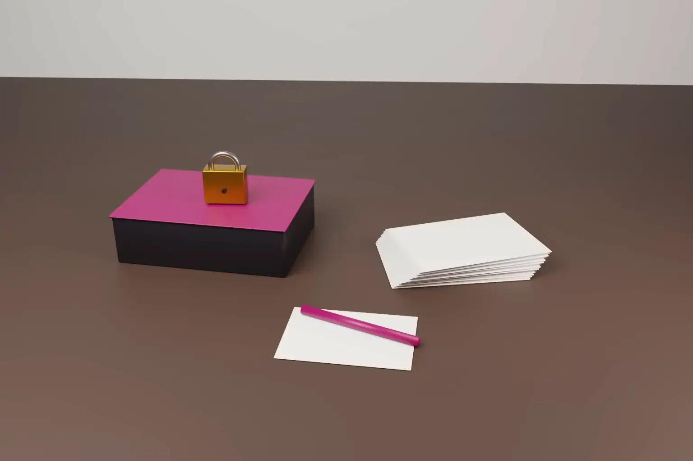

Can a former software licensee that builds a competing product be liable for trade secret misappropriation without copying code? On 3 November 2026 the Second Circuit said such a claim can go forward. In SS&C Technologies v Arcesium, it reversed the dismissal of a claim under the US Defend Trade Secrets Act.
The case is SS&C Technologies Holdings, Inc. v Arcesium LLC, No. 25‑2049. Judges Sack, Livingston and Carney heard the appeal, and Judge Sack wrote the opinion. The court decided only that the complaint states a plausible claim. Whether Arcesium misappropriated anything is still to be proved.
- A trade secret need not be copied exactly. Use includes any exploitation likely to injure the owner or enrich the defendant, such as speeding up development.
- Sharing a secret with licensed customers under confidentiality terms does not defeat the "reasonable measures" requirement.
- A complaint must show the boundaries of the secret. It need not define it with exact precision.
- On a motion to dismiss, a court may not accept the defendant's own reading of its internal emails over the plaintiff's.
- India still has no trade secrets statute. Indian companies rely on contracts and the law of confidence, and face US claims when they serve US clients.
The facts
SS&C owns Geneva, a portfolio accounting software developed by Advent Software. In 2015 Advent granted Arcesium a five year Hosted Reseller Agreement. Arcesium could sublicense Geneva to its customers and provide related services. The agreement barred it from building competing products with Geneva and from disclosing confidential information. It also barred use after expiry, apart from limited run off rights. SS&C acquired Advent later in 2015.
SS&C let the agreement expire in January 2020. It alleges that Arcesium then built two products. Trinity is a portfolio accounting system, said to have been built in under three years. Nautilus is a project said to let Arcesium keep connecting to Geneva. SS&C alleges that Trinity replicates Geneva's loader formats, data model and integration layer. It alleges that Nautilus used Geneva's integration layer, database schema and data model. It also points to internal messages about removing references to Geneva from Trinity documentation.
SS&C sued in the Southern District of New York. The district court accepted that SS&C had pleaded trade secrets in Geneva. It dismissed the claim because it found no plausible allegation of misappropriation.
What the Second Circuit decided
Use is read broadly. Under 18 U.S.C. § 1839(5), misappropriation includes the use of a trade secret without consent by someone who owed a duty of secrecy. The court adopted the reading of the Third Circuit in Oakwood Laboratories v Thanoo. Use covers marketing goods that embody the secret, relying on it to speed up research, or soliciting customers with it. The court quoted its earlier rule that trade secrets "need not be exactly copied" to impose liability.
SS&C's allegations met that test when read together. They included the replicated data model and loader formats, the short development time for Trinity, and marketing that Trinity could mimic Geneva. The breach of the confidentiality and use restrictions in the agreement supported the improper means element.
Licensing under confidentiality is a reasonable measure. Section 1839(3) requires the owner to take reasonable measures to keep the information secret. Arcesium argued that wide access by licensed users defeated secrecy. The court declined to adopt a rule that information shared with third parties cannot be a trade secret. It followed the Ninth Circuit in VBS Distribution v Nutrivita. Access limited to licensed customers bound by confidentiality terms was enough at this stage.
No strict specificity rule. A plaintiff must identify the secret with sufficient specificity to give the defendant notice of the claim. The court held that the complaint must let the defendant see at least the boundaries of the secret. SS&C did more than list categories. It explained what each element of Geneva does and how it could be used.
No fact finding on a motion to dismiss. The district court had preferred Arcesium's explanation of its internal emails. The court held that this was an error. Self serving internal documents are not taken as true just because the complaint cites them. A motion to dismiss tests legal sufficiency, not the weight of evidence.
What the court did not decide
- It did not decide that Arcesium misappropriated any trade secret.
- It did not decide what Arcesium's emails mean.
- It did not rule on SS&C's request to amend its complaint, because the reversal made that unnecessary.
- It did not address damages or any injunction.
Why this matters for Indian technology companies
Many Indian IT services firms, product companies and global capability centres work with foreign software. They host it, resell it, integrate with it or support it for clients. Some later build their own platforms in the same space. SS&C v Arcesium shows how a US licensor may frame such a case.
Exact copying of code is not required. Evidence that a former licensee used its access to shortcut development, match data structures or win customers may be enough to plead use. The DTSA applies where the secret relates to a product or service in interstate or foreign commerce. Section 1837 extends the statute to some conduct abroad. It applies where an act in furtherance occurred in the US, or the offender is a US person or entity. The Seventh Circuit has applied § 1837 to civil DTSA claims, but not every court has settled the point. Remedies include injunctions, damages and up to twice the damages for wilful and malicious misappropriation under § 1836(b).
How India, Europe and the UK compare
India. India has no trade secrets statute. Protection comes from contract and from the equitable action for breach of confidence. Courts grant injunctions to protect confidential information shared under a duty of confidence. Section 27 of the Indian Contract Act, 1872 makes agreements in restraint of trade void to that extent. Indian courts generally treat post term non compete clauses as void, while confidentiality obligations usually survive. In its 289th Report of March 2024, the Law Commission of India proposed a draft Protection of Trade Secrets Bill, 2024. It has not been enacted.
European Union. The Trade Secrets Directive (EU) 2016/943 sets a common definition. Under Article 2(1), the information must be secret, have commercial value because it is secret, and be protected by reasonable steps. Under Article 4(3), use is unlawful if it breaches a confidentiality agreement or a contractual duty to limit use. Article 8 caps limitation periods at six years.
United Kingdom. The UK implemented the Directive through the Trade Secrets (Enforcement, etc.) Regulations 2018. The equitable action for breach of confidence continues alongside the Regulations.
Across all three, the licence terms do much of the work. A clear confidentiality clause and a clear limit on use make it easier to show both secrecy and wrongful use.
Practical steps
- Licensors should define the confidential elements of their software in the licence. Name the data model, interfaces and integration layers, not just "the software".
- Licensors should restrict use to serving named customers and bar use to build competing products, during and after the term.
- Licensees and resellers planning their own product should run a documented clean room process. Keep developers with licensed access away from the new build, and record the independent sources used.
- Keep internal messages professional. Notes about removing references to a licensor's product can be read as concealment.
- Plan the exit. Agree in writing what happens to data, documentation and integrations when the licence ends, and how long run off rights last.
- Indian companies serving US clients should assume US trade secret law may apply. Contracts governed by Indian law do not remove that risk.
We advise on software licensing, confidentiality and IP strategy for technology companies. See our guide to the types of intellectual property protection. See also our note on licence disputes and arbitration in India.
Frequently asked questions
Can a former software licensee be sued for trade secret misappropriation without copying code?
Yes, in the US. In SS&C v Arcesium the Second Circuit held that use is read broadly. Relying on a secret to speed up development or win customers can be enough to plead misappropriation.
Does licensing software to customers destroy trade secret protection?
Not if access is limited and bound by confidentiality terms. The court held that sharing under an understanding of confidentiality can be a reasonable measure to keep the secret.
Does India have a trade secrets law?
Not a dedicated statute. Indian courts protect confidential information through contract and breach of confidence. The Law Commission proposed a draft bill in March 2024, but it has not been enacted.